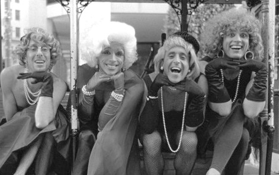
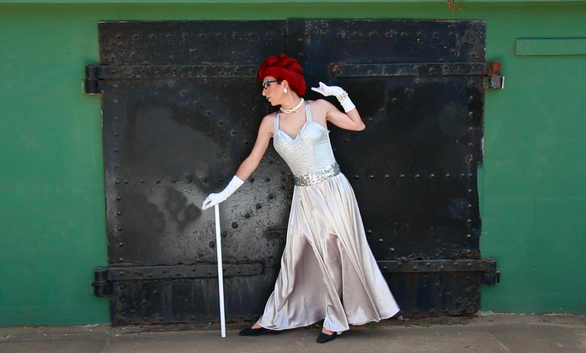

The Kinsey Sicks
America's Favorite Dragapella® Beautyshop Quartet
The True Story of The Kinsey Sicks
A Sensation!
With a phenomenal performance record that includes an Off-Broadway show, an extended run in Vegas, two feature films, eight albums, and appearances throughout the US (in over 40 states), Canada, Mexico, Europe, and Australia, The Kinsey Sicks hardly need an introduction. For over 20 years America's Favorite Dragapella Beautyshop Quartet has served up a feast of music and comedy to audiences at performing arts centers, music venues and comedy festivals in every kind of town you can imagine! Their award-winning a cappella singing, sharp satire and over-the-top drag have earned the Kinsey Sicks a diverse and devoted following.
Humble Beginnings
The Kinsey Sicks began in 1993 as a group of friends who went to a Bette Midler concert in San Francisco dressed as the Andrews Sisters. Assuming they'd be among many drag queens, they found themselves to be the only ones (other than Bette, of course). They were approached that night to perform at an upcoming event. Their reply - "we don't sing" - was quickly disproved when they realized that all of them had musical backgrounds. They began singing and harmonizing that night, and the seed for the Kinsey Sicks was planted.

Becoming a Phenomenon
In July 1994, the Kinsey Sicks drew a large and enthusiastic crowd at their first public performance on a street corner in San Francisco's Castro District. Since then, the Kinsey Sicks have produced and performed full-length theatrical productions around the country in such prestigious venues as the Herbst Theatre in San Francisco, the Nordstrom Recital Hall in Seattle, the Broward Center in Ft. Lauderdale, the Hobby Center in Houston, the Wheeler Opera House in Aspen and the Pacific Design Center in Los Angeles. Their earliest shows, such as "Sicks Appeal," "Sicks-Tease," "The Balled Sopranos," "Motel Sicks: A Dragapella Summer Vacation," "Everything But the Kitsch 'n' Synch" and "GreatesTits," all premiered at San Francisco's New Conservatory Theatre Center. Their more recent musicals - "I Wanna Be a Republican," "Condoleezzapalooza," "Oy Vey in a Manger," "Wake the F@#k Up America", "Each Hit & I", "Electile Dysfunction", and "America's Next Top Bachelor Housewife Celebrity Hoarder Makeover Star Gone Wild!" have toured internationally and have drawn the attention and devotion of unexpectedly diverse audiences.
Off-Broadway and Las Vegas
In 2001, the girls produced and starred in the critically acclaimed Off-Broadway hit, "Dragapella! Starring the Kinsey Sicks" at New York's legendary Studio 54. That production received a nomination for a Lucille Lortel award (the Off-Broadway Tony) as Best Musical and a Drama Desk nomination for Best Lyrics. In 2006 the girls wowed audiences with a much-coveted extended run at the Las Vegas Hilton. The show was ranked by critics as one of the best shows in Vegas, and heralded by reviewers as "a feast for the eyes, the ears and the funny bone."

Recordings, TV, Print, and Film
The Kinsey Sicks have recorded eight albums: Dragapella, Boyz 2 Girlz, Sicks in the City, I Wanna Be a Republican, Oy Vey in a Manger: Christmas Carols and Other Jewish Music, Sicks! Sicks! Sicks! Each Hit & I, Electile Dysfunction. They have been profiled on national television, including "20/20" and "CBS Early Show with Bryant Gumbel," and were the subjects of a lengthy cover feature in the arts section of the New York Times. The girls are also the subjects of two feature films: a concert film, "I Wanna Be a Republican" and a behind-the-scenes documentary, "Almost Infamous," chronicling the adventure of the group's extended run at the Las Vegas Hilton.
The Boyz Behind the Girlz
When the Kinsey Sicks began in 1993, its founders were a group of refugees from successful careers as professionals and activists. Current member Ben Schatz ("Rachel") is a Harvard-trained civil rights lawyer, former Director of the national Gay and Lesbian Medical Association, and one-time presidential advisor on Hiv issues. Schatz created the first national AIDS legal project and authored Clinton's HIV policy during the 1992 presidential campaign.
In 2004, the Kinsey Sicks were joined by actor/singer/designer Jeff Manabat, who is responsible for Trixie's inordinate glamour and soaring counter-tenor, as well as the entire group's hot couture. In 2008, the Kinsey Sicks was joined by the hilarious and talented Spencer Brown ("Trampolina"), a Kansas City-based actor and singer, already known for his famous drag character Daisy Buckët (pronounced, of course, "bouquet"), whose tireless work has helped raise tens of thousands of dollars for local AIDS fundraisers. And finally, in 2015, the comedically and musically gifted Nathan Marken ("Winnie"), who hails from the Kinsey Sicks hometown of San Francisco, joined the group.
